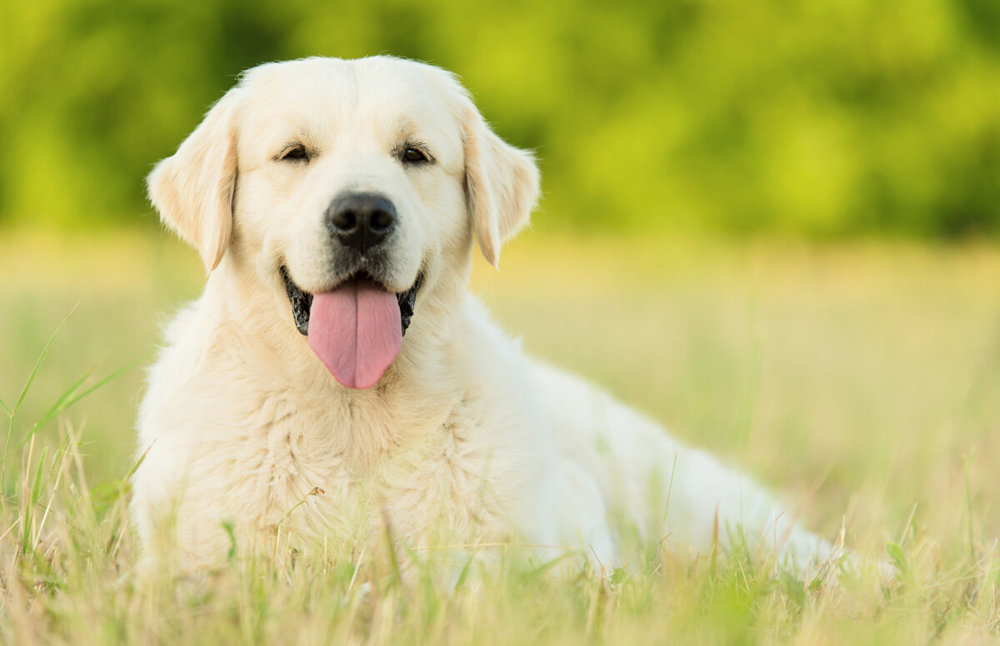
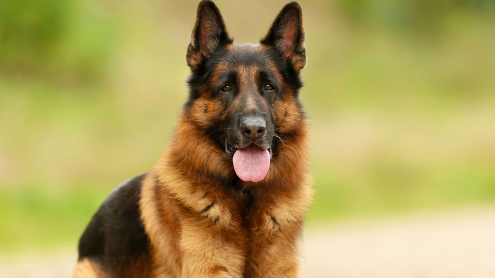
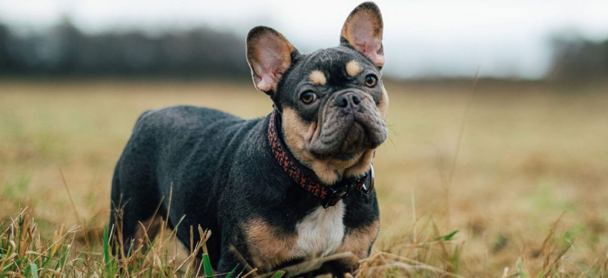
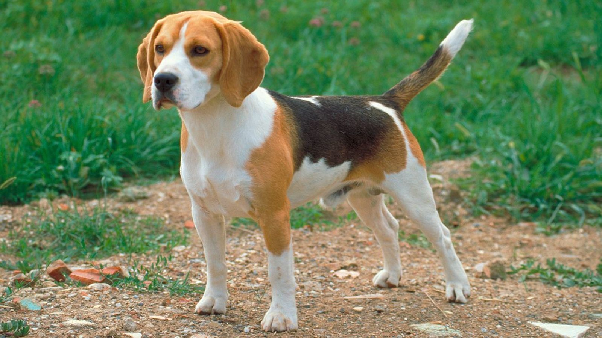

Razas de Perros
Descubre las razas más populares y sus características
Tabla de Razas
| Raza | Tamaño | Peso (kg) | Altura (cm) | Temperamento | Origen |
|---|---|---|---|---|---|
| Labrador Retriever | Grande | 25-36 | 55-62 | Juguetón, leal | Canadá |
| Pastor Alemán | Grande | 22-40 | 55-65 | Inteligente, protector | Alemania |
| Bulldog Francés | Pequeño | 8-14 | 27-35 | Afectuoso | Francia |
| Golden Retriever | Grande | 25-34 | 51-61 | Dulce, amigable | Escocia |
| Beagle | Mediano | 9-11 | 33-40 | Alegre, curioso | Inglaterra |
| Poodle | Mediano/Grande | 15-30 | 35-60 | Inteligente | Alemania |
| Boxer | Grande | 25-32 | 53-63 | Valiente, juguetón | Alemania |

Labrador Retriever
El Labrador es conocido por su carácter amigable, inteligencia y gran capacidad para el trabajo. Original de Canadá, fue criado como perro de recuperación. Perfecto para familias.
- Esperanza de vida: 10-12 años
- Nivel de ejercicio: Alto
- Fácil de entrenar: ⭐⭐⭐⭐⭐

Pastor Alemán
Perro de trabajo por excelencia. Muy leal, protector y fácil de entrenar. Popular en policía y militares. Necesita mucho ejercicio físico y mental.
- Esperanza de vida: 9-13 años
- Nivel de ejercicio: Muy alto
- Fácil de entrenar: ⭐⭐⭐⭐⭐

Bulldog Francés
Pequeño pero con gran personalidad. Muy afectuoso y tranquilo, ideal para apartamentos. Su hocico chato requiere cuidados especiales de respiración y temperatura.
- Esperanza de vida: 10-12 años
- Nivel de ejercicio: Bajo
- Fácil de entrenar: ⭐⭐⭐

Golden Retriever
El compañero perfecto para familias. Dulce, paciente y excelente con niños. Necesita ejercicio diario y cepillado frecuente por su abundante pelaje.
- Esperanza de vida: 10-12 años
- Nivel de ejercicio: Alto
- Fácil de entrenar: ⭐⭐⭐⭐⭐

Beagle
Alegre y curioso, famoso por su olfato excepcional. Perro de caza por naturaleza. Muy sociable pero testarudo. Perfecto para familias activas.
- Esperanza de vida: 12-15 años
- Nivel de ejercicio: Medio
- Fácil de entrenar: ⭐⭐⭐

Poodle
Una de las razas más inteligentes del mundo. Hipolatérgico y elegante. Existen en tres tamaños: toy, miniatura y estándar. Muy versátil.
- Esperanza de vida: 12-15 años
- Nivel de ejercicio: Medio
- Fácil de entrenar: ⭐⭐⭐⭐⭐

Boxer
Valiente, juguetón y lleno de energía. Excelente perro guardián familiar. Muy protector con los niños. Necesita ejercicio constante.
- Esperanza de vida: 10-12 años
- Nivel de ejercicio: Alto
- Fácil de entrenar: ⭐⭐⭐⭐